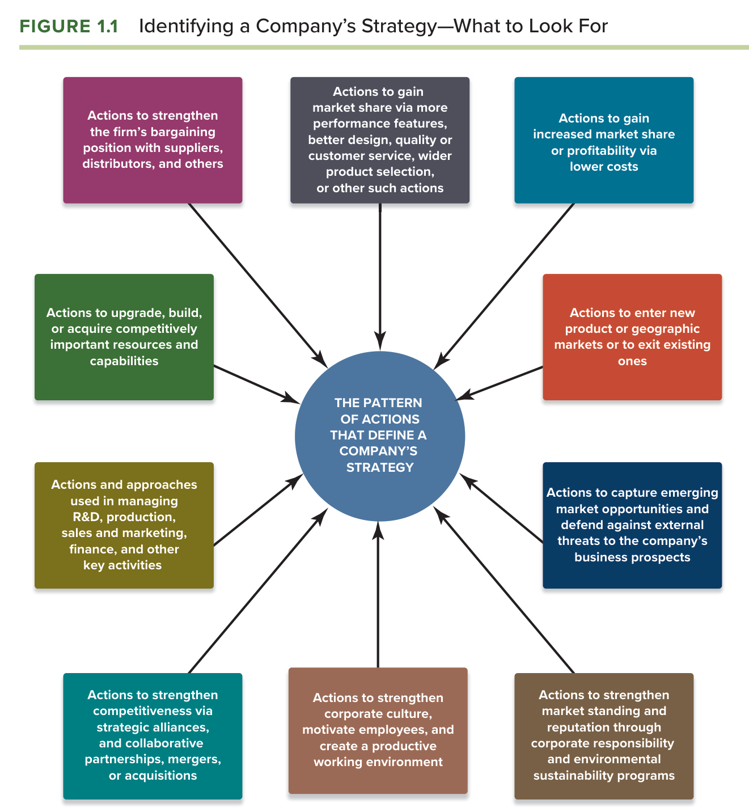
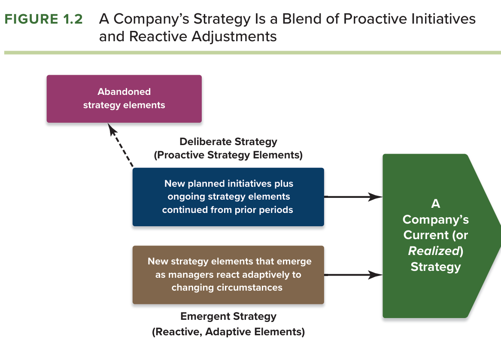
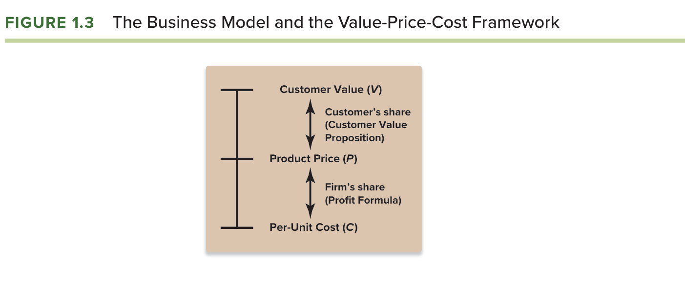
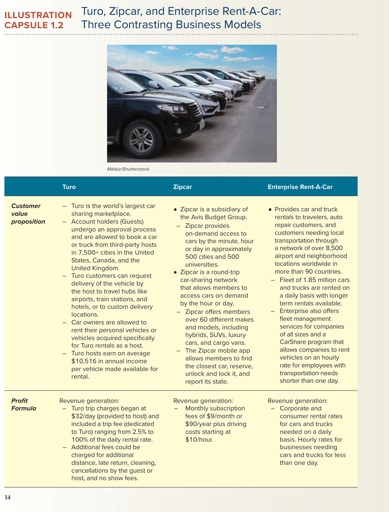
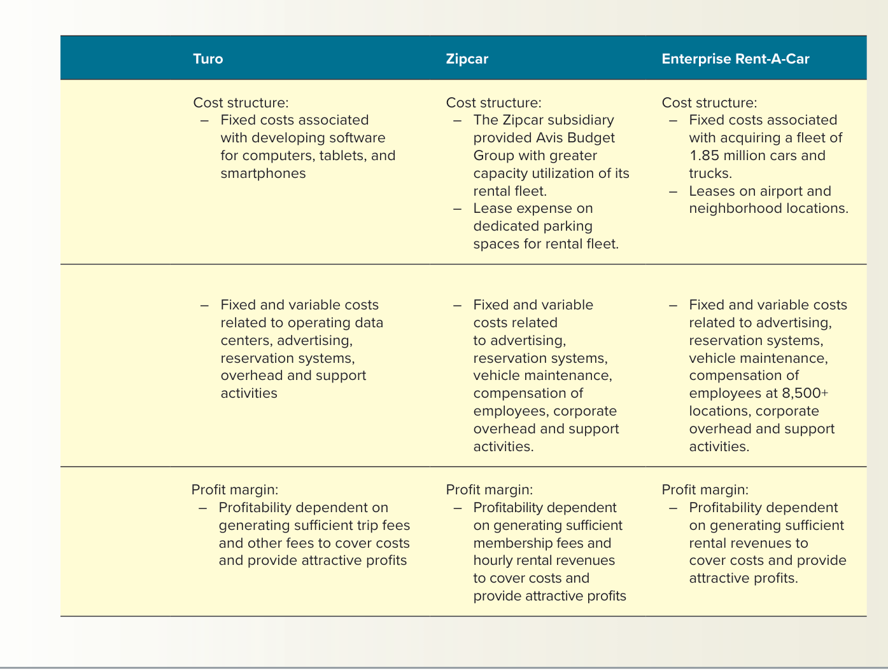

| Buku acuan | Thompson, Peteraf, Gamble & Strickland, Crafting & Executing Strategy: The Quest for Competitive Advantage (edisi ke-24, 2024), Bab 1 “What Is Strategy and Why Is It Important?”. |
| Framework sesi | Eisenhower Matrix (Group 1) sebagaimana ditetapkan silabus untuk sesi 2 bersama Bab 1. |
| Kasus penerapan | Robert M. Grant (2010), Case 9 “AirAsia: The World’s Lowest Cost Airline”, kasus yang ditetapkan silabus untuk Bab 3, dipakai lebih awal agar rangkaian Bab 1 sampai Bab 5 memakai perusahaan yang sama. |
| Standar dosen | RPKPS “@2026 AOL Course Outline SM MM_JKT SEMBA”, termasuk rubrik nilai, panduan analisis kasus (Appendix 3), learning diary, dan sesi framework. |
| Sesi terkait | Sesi 2: Ch. 01 + Eisenhower Matrix (Group 1). Sesi 3: Ch. 02 + SCP Paradigm. Sesi 4: Ch. 03 + kasus AirAsia. |
Modul ini ditulis sebagai uraian naratif, bukan ringkasan. Setiap sub-bagian framework mengikuti urutan yang sama: pengertian dan kedudukannya dalam buku, uraian setiap dimensi beserta mekanismenya, cara seorang CEO menggunakannya, penerapan pada kasus dengan angka, dan kesalahan yang menurunkan nilai. Bacalah gambar asli buku terlebih dahulu pada setiap sub-bagian, lalu paragraf-paragraf yang menjelaskannya, karena paragraf tersebut merujuk langsung pada unsur-unsur gambar.
Bab 1 dibahas pada sesi kedua dengan sub-tujuan agar mahasiswa mampu mengidentifikasi pengertian strategi, tujuannya, dan mengapa strategi penting (Almahendra, 2026). Pada sesi yang sama, Kelompok 1 bertugas mempresentasikan bab dan framework tambahan berupa Eisenhower Matrix. Pemasangan tersebut bukan kebetulan. Bab 1 buku mendefinisikan strategi sebagai serangkaian tindakan yang terkoordinasi, dan Eisenhower Matrix adalah alat untuk memilih tindakan mana yang layak dikerjakan lebih dahulu berdasarkan urgensi dan kepentingannya. Dengan kata lain, dosen memasangkan bab tentang "apa itu strategi" dengan alat tentang "bagaimana memprioritaskan tindakan", sehingga sejak sesi pertama mahasiswa diajak melihat strategi sebagai pilihan yang dibuat di bawah keterbatasan waktu dan sumber daya, bukan sebagai daftar keinginan.
Standar penilaian yang berlaku untuk seluruh mata kuliah juga berlaku di sini. Tujuan mata kuliah pertama menuntut kemampuan menerapkan framework strategis untuk menganalisis isu strategis, dan rubrik nilai A menuntut orisinalitas serta argumen yang saling bertentangan (Almahendra, 2026). Untuk Bab 1, hal ini berarti mahasiswa harus mampu membedakan strategi yang sesungguhnya dari sekadar daftar kegiatan, mampu menguji sebuah strategi dengan tiga tes pemenang, dan mampu menunjukkan mengapa sebuah strategi yang tampak berhasil bisa jadi tidak lolos uji. Dari uraian tersebut dapat disimpulkan bahwa Bab 1 dinilai bukan dari kemampuan mendefinisikan strategi, melainkan dari kemampuan mengenali dan menguji strategi pada perusahaan nyata.
Dari tujuh prinsip cara berpikir dosen yang direkonstruksi dari silabus, tiga prinsip paling menentukan pada Bab 1. Prinsip pertama, framework mendahului opini, berarti bahwa pernyataan "AirAsia punya strategi yang bagus" tidak bernilai sampai ia diuraikan dengan Figure 1.1 tentang pola tindakan, diperiksa dengan kerangka value-price-cost, dan diuji dengan tiga tes strategi pemenang. Prinsip ketiga, analisis harus berujung keputusan, berarti bahwa pembahasan tentang strategi yang deliberate dan emergent harus ditutup dengan pertanyaan apa yang harus dilakukan manajemen terhadap unsur strategi yang sudah usang. Prinsip kelima, nilai A menuntut perspektif yang bertentangan, berarti bahwa uji tiga tes harus dilakukan dengan jujur, termasuk menunjukkan tes mana yang tidak sepenuhnya lolos.
Framework pendamping Eisenhower Matrix memberi petunjuk tambahan dengan tingkat keyakinan [Kemungkinan Besar]. Dosen tampaknya ingin mahasiswa memahami bahwa strategi adalah soal memilih, dan bahwa memilih berarti menolak. Buku sendiri menegaskan bahwa strategi memberi arah tentang apa yang harus dilakukan sekaligus apa yang tidak boleh dilakukan, dan bahwa mengetahui apa yang tidak boleh dilakukan bisa sama pentingnya dengan mengetahui apa yang harus dilakukan (Thompson et al., 2024, hlm. 4). Eisenhower Matrix adalah cara praktis untuk mendisiplinkan penolakan itu.
Eisenhower Matrix, yang juga dikenal sebagai matriks urgensi-kepentingan, adalah alat untuk mengelompokkan tugas atau tindakan ke dalam empat kuadran berdasarkan dua dimensi. Dimensi pertama adalah kepentingan, yaitu seberapa besar kontribusi tindakan tersebut terhadap tujuan jangka panjang. Dimensi kedua adalah urgensi, yaitu seberapa mendesak tindakan tersebut harus dilakukan karena tenggat atau tekanan eksternal. Kuadran pertama berisi tindakan yang penting dan mendesak, yang harus dikerjakan segera oleh pengambil keputusan sendiri. Kuadran kedua berisi tindakan yang penting tetapi tidak mendesak, yang harus dijadwalkan dan dilindungi waktunya karena di sinilah pekerjaan strategis sesungguhnya berada. Kuadran ketiga berisi tindakan yang mendesak tetapi tidak penting, yang sebaiknya didelegasikan. Kuadran keempat berisi tindakan yang tidak penting dan tidak mendesak, yang sebaiknya dihilangkan. Ukuran yang dipakai adalah penilaian kualitatif atas dua dimensi tersebut, dan keluarannya adalah alokasi perhatian dan waktu manajemen.
Hubungan matriks ini dengan Bab 1 terletak pada gagasan bahwa strategi adalah kuadran kedua. Buku menyatakan bahwa merumuskan strategi bukanlah peristiwa sekali jadi melainkan pekerjaan yang terus berlangsung (Thompson et al., 2024, hlm. 9), dan pekerjaan semacam itu hampir tidak pernah mendesak pada hari tertentu, sehingga sering kalah oleh urusan operasional yang mendesak tetapi kurang penting. Seorang CEO yang membiarkan agendanya dipenuhi kuadran pertama dan ketiga akan menjalankan perusahaan tanpa strategi, karena strategi hanya lahir dari waktu yang sengaja disisihkan untuk kuadran kedua. Manfaat matriks ini dalam konteks bisnis internasional adalah membantu manajemen yang menghadapi banyak pasar sekaligus untuk membedakan krisis lokal yang mendesak dari keputusan lintas negara yang penting, misalnya membedakan penanganan keluhan pelanggan di satu negara dari keputusan membangun hub baru di negara lain.
Pada kasus AirAsia, matriks ini membantu membaca keputusan Tony Fernandes. Membeli AirAsia seharga satu ringgit pada 2001 adalah tindakan kuadran pertama bagi pemerintah Malaysia yang ingin melepas maskapai yang merugi, tetapi bagi Fernandes ia adalah pintu masuk ke kuadran kedua, yaitu membangun sistem berbiaya rendah yang baru berbuah bertahun-tahun kemudian. Sebaliknya, keputusan melepas kontrak berjangka bahan bakar pada 2008 (Grant, 2010) adalah contoh tindakan yang terasa mendesak karena harga minyak sedang jatuh, tetapi dampaknya pada tujuan jangka panjang justru negatif, sehingga ia adalah kuadran ketiga yang salah diperlakukan sebagai kuadran pertama. Pembedaan semacam inilah yang diharapkan dosen ketika memasangkan Eisenhower Matrix dengan bab tentang strategi.
Bab 1 menetapkan enam tujuan pembelajaran yang sekaligus menjadi daftar framework bab ini (Thompson et al., 2024, hlm. 2). Tujuan pertama adalah memahami pengertian strategi perusahaan dan mengapa strategi harus berbeda dari pesaing, yang dijawab oleh definisi strategi dan Figure 1.1 tentang pola tindakan. Tujuan kedua adalah memahami konsep keunggulan kompetitif yang berkelanjutan, yang dijawab oleh dua mekanisme keunggulan dan syarat keberlanjutannya. Tujuan ketiga adalah menjelaskan lima pendekatan strategis dasar, yang menjadi pratinjau Bab 5. Tujuan keempat adalah memahami mengapa strategi berevolusi, yang dijawab oleh Figure 1.2 tentang strategi deliberate dan emergent. Tujuan kelima adalah mengidentifikasi model bisnis yang layak, yang dijawab oleh Figure 1.3 tentang kerangka value-price-cost. Tujuan keenam adalah menyebutkan tiga tes strategi pemenang. Di luar keenam tujuan itu, buku menambahkan uji etika dan penegasan bahwa strategi yang baik dan eksekusi yang baik adalah tanda manajemen yang baik. Seluruh framework tersebut dibahas berurutan pada bagian ini, dan tidak ada framework Bab 1 di luar daftar ini.
Strategi perusahaan menurut Thompson et al. (2024, hlm. 4) adalah serangkaian tindakan terkoordinasi yang diambil manajer untuk mengungguli pesaing dan mencapai laba yang superior. Tiga kata dalam definisi tersebut menentukan cara membacanya. Kata tindakan berarti strategi bukan pernyataan niat, melainkan sesuatu yang dilakukan dan dapat diamati. Kata terkoordinasi berarti tindakan-tindakan itu saling menopang, bukan sekumpulan inisiatif yang berdiri sendiri. Kata mengungguli pesaing berarti strategi selalu relatif, sehingga sebuah tindakan yang juga dilakukan semua pesaing bukan strategi melainkan syarat minimum. Buku menegaskan bahwa tujuan strategi yang baik bukan keberhasilan sementara melainkan keberhasilan yang bertahan lama, dan bahwa hal itu menuntut komitmen manajerial pada serangkaian pilihan yang koheren tentang cara bersaing, mulai dari cara memposisikan perusahaan, menarik pelanggan, melawan rival, mencapai target kinerja, memanfaatkan peluang pertumbuhan, sampai merespons perubahan kondisi.
Inti dari definisi tersebut adalah gagasan bahwa strategi berarti bersaing secara berbeda. Meniru strategi rival yang berhasil, baik dengan produk tiruan maupun dengan merebut posisi pasar yang sama, jarang berhasil, sehingga setiap strategi harus memiliki unsur pembeda yang menarik pelanggan dan memberi keunggulan (Thompson et al., 2024, hlm. 4). Buku merumuskannya dengan kalimat yang layak dihafal: strategi pada hakikatnya adalah melakukan apa yang tidak dilakukan rival, atau lebih baik lagi, apa yang tidak dapat dilakukan rival. Unsur pembeda itu tidak harus seratus persen berbeda, tetapi harus berbeda pada aspek yang penting, dan peluang berhasilnya lebih besar bila strategi diarahkan pada dua hal, yaitu menarik pembeli dengan cara yang membedakan perusahaan dari rival dan menempati posisi pasar yang tidak dipadati pesaing kuat. Strategi juga memberi arah tentang apa yang tidak boleh dilakukan, karena langkah strategis yang salah paling ringan berarti pemborosan sumber daya dan paling berat berarti ancaman bagi kelangsungan perusahaan.

Figure 1.1 yang disajikan pada Gambar B.1 adalah alat diagnosis untuk mengenali strategi sebuah perusahaan dari pola tindakannya. Gambar tersebut memuat sepuluh jenis tindakan yang mengelilingi pola tindakan yang mendefinisikan strategi. Tindakan pertama adalah tindakan untuk memperoleh pangsa pasar atau laba melalui biaya yang lebih rendah. Tindakan kedua adalah tindakan untuk memperoleh pangsa pasar melalui fitur, desain, kualitas, layanan, atau pilihan produk yang lebih baik. Tindakan ketiga adalah tindakan untuk masuk ke pasar produk atau geografis baru atau keluar dari pasar yang ada. Tindakan keempat adalah tindakan untuk meningkatkan, membangun, atau memperoleh sumber daya dan kapabilitas yang penting secara kompetitif. Tindakan kelima adalah tindakan untuk menangkap peluang pasar yang muncul dan bertahan dari ancaman eksternal. Tindakan keenam adalah pendekatan dalam mengelola riset, produksi, pemasaran, keuangan, dan aktivitas kunci lainnya. Tindakan ketujuh adalah tindakan untuk memperkuat posisi tawar terhadap pemasok, distributor, dan pihak lain. Tindakan kedelapan adalah tindakan untuk memperkuat daya saing melalui aliansi, kemitraan, merger, atau akuisisi. Tindakan kesembilan adalah tindakan untuk memperkuat budaya, memotivasi karyawan, dan menciptakan lingkungan kerja yang produktif. Tindakan kesepuluh adalah tindakan untuk memperkuat reputasi melalui tanggung jawab sosial dan keberlanjutan lingkungan.
Bagi seorang CEO, Figure 1.1 berguna sebagai cermin. Apabila daftar tindakan perusahaan selama tiga tahun terakhir dipetakan ke sepuluh kategori tersebut dan tidak membentuk pola yang koheren, maka perusahaan itu sesungguhnya tidak memiliki strategi, melainkan hanya kumpulan kegiatan. Sebaliknya, apabila tindakan-tindakan di berbagai kategori saling menopang dan mengarah pada satu keunggulan, maka strategi itu nyata meskipun tidak pernah ditulis. Buku menegaskan hal ini di bagian lain, yaitu bahwa strategi yang terealisasi dapat diamati dari pola tindakan perusahaan dari waktu ke waktu, dan pola itu adalah indikator yang jauh lebih baik daripada rencana strategis di atas kertas atau pernyataan publik tentang strategi (Thompson et al., 2024, hlm. 10).
Jantung dari setiap strategi adalah tindakan di pasar yang diambil manajer untuk memperoleh keunggulan kompetitif atas rival. Perusahaan memiliki keunggulan kompetitif apabila ia memiliki semacam keunggulan atas rival dalam menarik pembeli dan menghadapi kekuatan kompetitif, dan keunggulan tersebut esensial bagi keberhasilan pasar dan laba yang lebih tinggi dalam jangka panjang (Thompson et al., 2024, hlm. 5). Buku menyederhanakan banyak jalan menuju keunggulan kompetitif menjadi dua mekanisme dasar. Mekanisme pertama adalah memberi pelanggan produk atau jasa yang dinilai lebih tinggi daripada milik pesaing, yaitu nilai yang dipersepsikan lebih tinggi. Mekanisme kedua adalah memproduksi produk atau jasa secara lebih efisien, yaitu biaya yang lebih rendah. Apa pun bentuknya, menyampaikan nilai yang superior atau menyampaikan nilai secara lebih efisien hampir selalu menuntut pelaksanaan aktivitas rantai nilai yang berbeda dari rival dan pembangunan kapabilitas yang tidak mudah ditandingi.
Keunggulan kompetitif disebut berkelanjutan apabila ia bertahan meskipun pesaing berusaha sekuat tenaga untuk menandingi atau melampauinya. Yang membuat keunggulan berkelanjutan, menurut buku, adalah unsur strategi yang memberi pembeli alasan yang bertahan lama untuk memilih produk perusahaan, yaitu alasan yang tidak dapat dihapus, ditiru, atau diatasi pesaing (Thompson et al., 2024, hlm. 6). Buku memakai Apple sebagai ilustrasi, dengan pengakuan nama yang tak tertandingi, reputasi produk yang unggul secara teknis dan indah desainnya, serta toko yang menarik dengan staf yang berpengetahuan sebagai unsur yang sulit dilemahkan pesaing. Pelajaran metodologisnya adalah bahwa keberlanjutan tidak ditentukan oleh besarnya keunggulan hari ini, melainkan oleh sulitnya keunggulan itu ditiru, dan penilaian ini akan diformalkan pada Bab 4 melalui uji VRIN.
Buku memperkenalkan lima pendekatan strategis yang paling sering dipakai dan paling dapat diandalkan untuk membedakan perusahaan dari rival, membangun loyalitas pelanggan, dan memperoleh keunggulan kompetitif (Thompson et al., 2024, hlm. 6-8). Pendekatan pertama adalah strategi penyedia berbiaya rendah yang mengejar keunggulan berbasis biaya, dengan Walmart dan Southwest Airlines sebagai contoh yang keunggulannya bertahan karena rival sulit menandingi cara mereka memangkas biaya. Pendekatan kedua adalah strategi diferensiasi luas yang membedakan produk dengan cara yang menarik spektrum pembeli yang lebar, dengan contoh Apple, Johnson and Johnson, Rolex, dan BMW, dan keunggulannya dipertahankan dengan inovasi yang cukup cepat untuk menggagalkan peniru. Pendekatan ketiga adalah strategi berbiaya rendah terfokus pada segmen sempit, dengan contoh produsen merek pribadi dan IKEA. Pendekatan keempat adalah strategi diferensiasi terfokus yang menawarkan atribut khusus bagi segmen sempit, dengan contoh Lululemon, Tesla, LinkedIn, dan Goya Foods. Pendekatan kelima adalah strategi biaya terbaik yang memberi pelanggan nilai lebih untuk uangnya dengan memenuhi harapan atas kualitas dan layanan sambil mengalahkan harapan harga, yang merupakan hibrida antara biaya rendah dan diferensiasi, dengan Target sebagai contoh.
Bagian ini dalam Bab 1 hanya pratinjau, dan pembahasan lengkapnya ada di Bab 5. Namun, buku sudah menanam satu peringatan yang penting bagi cara berpikir CEO: memenangkan keunggulan yang berkelanjutan dengan pendekatan mana pun bergantung pada pembangunan keahlian dan kapabilitas yang tidak mudah ditandingi rival, setidaknya sama besarnya dengan memiliki produk yang khas. Rival yang cerdik hampir selalu dapat meniru atribut produk yang populer, tetapi meniru pengalaman, pengetahuan, dan kapabilitas khusus yang dibangun dan disempurnakan dalam waktu lama jauh lebih sulit dan lebih lama (Thompson et al., 2024, hlm. 8-9). Buku menyebut Swatch, Apple, dan Hyundai sebagai contoh kapabilitas yang sulit ditiru.
Keunggulan yang berkelanjutan menarik karena menawarkan keunggulan yang lebih tahan lama, tetapi buku mengingatkan bahwa keberlanjutan adalah istilah relatif dan bahwa bahkan keunggulan yang substansial dapat runtuh menghadapi pergeseran drastis kondisi pasar atau inovasi disruptif (Thompson et al., 2024, hlm. 9). Oleh karena itu, manajer harus bersedia dan siap memodifikasi strategi sebagai respons terhadap perubahan kondisi pasar, kemajuan teknologi, langkah tak terduga pesaing, pergeseran kebutuhan pembeli, peluang baru, dan gagasan baru untuk memperbaiki strategi. Sebagian besar waktu strategi berevolusi secara bertahap melalui penyempurnaan, tetapi pada saat tertentu diperlukan pergeseran besar, misalnya ketika strategi jelas gagal atau kondisi industri berubah dramatis. Industri dengan perubahan berkecepatan tinggi menuntut adaptasi berulang, bahkan beberapa kali dalam setahun. Kesimpulan buku adalah bahwa merumuskan strategi bukan peristiwa sekali jadi melainkan selalu pekerjaan yang sedang berlangsung.

Sifat evolusioner tersebut berarti strategi perusahaan yang tipikal adalah perpaduan antara inisiatif proaktif yang direncanakan untuk memperbaiki kinerja dan mengamankan keunggulan, dan respons reaktif terhadap perkembangan yang tidak diantisipasi (Thompson et al., 2024, hlm. 9-10). Figure 1.2 yang disajikan pada Gambar B.2 membedakan tiga unsur. Unsur pertama adalah strategi deliberate, yaitu unsur strategi proaktif yang direncanakan dan terealisasi sesuai rencana, yang terdiri atas inisiatif baru yang direncanakan dan unsur strategi yang berlanjut dari periode sebelumnya. Unsur kedua adalah strategi emergent, yaitu unsur strategi reaktif dan adaptif yang muncul ketika manajer bereaksi terhadap perubahan keadaan, seperti manuver rival, pergeseran kebutuhan pelanggan, perkembangan teknologi, peluang baru, atau perubahan iklim politik dan ekonomi. Unsur ketiga adalah unsur strategi yang ditinggalkan karena tidak berhasil, usang, atau tidak efektif. Strategi yang terealisasi adalah gabungan unsur deliberate dan emergent setelah dikurangi unsur yang ditinggalkan.
Bagi seorang CEO, Figure 1.2 mengubah cara memandang rencana strategis. Rencana adalah hipotesis tentang strategi deliberate, dan perusahaan yang sehat mengharapkan sebagian hipotesisnya gagal dan sebagian strateginya muncul dari lapangan. Dua kesalahan yang berlawanan harus dihindari. Kesalahan pertama adalah memperlakukan rencana sebagai sesuatu yang harus dipertahankan apa pun yang terjadi, sehingga unsur yang seharusnya ditinggalkan terus dibiayai. Kesalahan kedua adalah membiarkan seluruh strategi menjadi emergent, sehingga perusahaan hanya bereaksi dan kehilangan arah. Buku memberi indikator yang tegas untuk membaca strategi yang sebenarnya, yaitu pola tindakan dari waktu ke waktu, bukan dokumen rencana.
Dalam memilih di antara alternatif strategis, manajer dianjurkan memilih tindakan yang lolos uji penelitian moral, dan buku menegaskan bahwa menjaga tindakan tetap legal tidak berarti strategi itu etis, karena standar etika menyangkut benar dan salah serta kewajiban, bukan sekadar legalitas (Thompson et al., 2024, hlm. 10-11). Strategi disebut etis hanya apabila tidak memuat tindakan yang melewati garis dari boleh dilakukan ke tidak seharusnya dilakukan. Tindakan strategis kemungkinan dinilai tidak etis apabila mencerminkan citra buruk bagi perusahaan, merugikan kepentingan sah pemegang saham, pelanggan, karyawan, pemasok, komunitas, dan masyarakat, atau memicu kecaman publik. Buku mengakui adanya wilayah abu-abu dan memberikan contoh pertanyaan seperti iklan minuman beralkohol di media dengan penonton di bawah umur, harga obat penyelamat nyawa yang berbeda antarnegara, dan pengabaian kerusakan lingkungan yang masih sesuai regulasi.
Buku memberi dua alasan bisnis untuk menghindari strategi yang tidak etis, di samping alasan bahwa tindakan tidak etis memang salah. Alasan pertama adalah kerusakan reputasi dan keuangan yang substansial ketika perusahaan disorot publik karena perbuatan tercela, yang menghantam pendapatan dan harga saham. Alasan kedua adalah bahwa pelanggan, pemasok, dan karyawan berintegritas menjauhi perusahaan yang praktiknya kotor. Eksekutif dengan keyakinan etis yang kuat bersikap proaktif dengan melarang peluang bisnis yang meragukan, menuntut integritas dari seluruh personel, dan memasang mekanisme pengawasan. Dalam konteks silabus, uji etika ini bersambung dengan Bab 9 tentang strategi etis dan tanggung jawab sosial, tetapi buku sengaja menempatkannya di Bab 1 agar etika dipahami sebagai bagian dari definisi strategi yang baik, bukan sebagai tambahan.
Di inti setiap strategi yang sehat terdapat model bisnis perusahaan, yaitu cetak biru manajemen untuk menyampaikan produk atau jasa yang bernilai kepada pelanggan dengan cara yang menghasilkan pendapatan yang cukup untuk menutup biaya dan menghasilkan laba yang menarik (Thompson et al., 2024, hlm. 11). Model bisnis memiliki dua unsur. Unsur pertama adalah proposisi nilai pelanggan, yaitu pendekatan perusahaan untuk memuaskan keinginan dan kebutuhan pembeli pada harga yang dianggap pelanggan sebagai nilai yang baik. Unsur kedua adalah formula laba, yaitu pendekatan perusahaan untuk menentukan struktur biaya yang memungkinkan laba yang dapat diterima, mengingat harga yang terikat pada proposisi nilai. Figure 1.3 yang disajikan pada Gambar B.3 menggambarkan kedua unsur tersebut dalam kerangka value-price-cost.

Kerangka tersebut bekerja dengan tiga besaran. V adalah nilai yang dipersepsikan pelanggan, P adalah harga, dan C adalah biaya per unit. Proposisi nilai pelanggan dinyatakan sebagai V dikurangi P, yaitu persepsi pelanggan tentang seberapa besar nilai yang ia peroleh untuk uangnya. Formula laba per unit dinyatakan sebagai P dikurangi C. Dari sudut pandang pelanggan, semakin besar nilai yang disampaikan dan semakin rendah harganya, semakin menarik proposisi nilainya. Dari sudut pandang perusahaan, semakin rendah biaya untuk proposisi nilai tertentu, semakin besar kemampuan model bisnis menghasilkan uang (Thompson et al., 2024, hlm. 12). Buku menegaskan bahwa persoalan inti model bisnis adalah apakah perusahaan dapat mengeksekusi proposisi nilainya secara menguntungkan, dan bahwa memiliki strategi tidak otomatis berarti laba. Contoh yang diberikan buku beragam, mulai dari model power-by-the-hour Rolls-Royce yang menyewakan mesin pesawat berdasarkan jam terbang, model pisau cukur Gillette yang menjual produk induk murah dan meraih laba dari pembelian ulang, model printer dan tinta, sampai model McDonald's dengan desain gerai standar, spesifikasi ketat, dan iklan besar untuk mendorong volume. Illustration Capsule 1.2 yang disajikan pada Gambar B.4 membandingkan tiga model bisnis persewaan mobil yang berbeda, yaitu Turo, Zipcar, dan Enterprise, pada dua unsur yang sama.


Bagi seorang CEO, kerangka V-P-C adalah alat paling ringkas untuk menguji apakah sebuah ide bisnis masuk akal sebelum ditulis menjadi rencana. Tiga pertanyaan yang diajukannya adalah berapa besar nilai yang benar-benar dirasakan pelanggan, berapa harga yang rela mereka bayar, dan berapa biaya untuk menyampaikannya. Ide yang V-nya tinggi tetapi C-nya lebih tinggi lagi bukan strategi, melainkan amal; ide yang C-nya rendah tetapi V-nya lebih rendah lagi bukan strategi, melainkan barang murahan yang tidak dibeli. Kerangka ini akan dipakai kembali di Bab 3 untuk membaca efek senjata kompetitif, di Bab 4 untuk mendefinisikan nilai ekonomi total, dan di Bab 5 untuk membedakan tiga pendekatan keunggulan kompetitif.
Buku menetapkan tiga tes untuk menentukan apakah sebuah strategi adalah strategi pemenang (Thompson et al., 2024, hlm. 13). Tes pertama adalah tes kecocokan, yang menanyakan seberapa baik strategi cocok dengan situasi perusahaan. Kecocokan ini memiliki tiga dimensi. Kecocokan eksternal berarti strategi selaras dengan kondisi industri dan persaingan serta peluang pasar terbaik perusahaan. Kecocokan internal berarti strategi disesuaikan dengan sumber daya dan kapabilitas kompetitif perusahaan dan didukung oleh aktivitas fungsional yang saling melengkapi, sehingga perusahaan mampu mengeksekusinya. Kecocokan dinamis berarti strategi berevolusi dari waktu ke waktu sehingga tetap selaras ketika kondisi eksternal dan internal berubah. Buku menegaskan bahwa strategi tanpa kecocokan eksternal dan internal kemungkinan besar berkinerja buruk.
Tes kedua adalah tes keunggulan kompetitif, yang menanyakan apakah strategi membantu perusahaan mencapai keunggulan kompetitif dan apakah keunggulan itu berkelanjutan. Strategi yang gagal menghasilkan keunggulan atas rival tidak mungkin menghasilkan kinerja superior, dan kecuali keunggulan itu berkelanjutan, kinerja superior tidak akan bertahan lebih dari waktu singkat. Semakin besar dan semakin tahan lama keunggulannya, semakin kuat strateginya. Tes ketiga adalah tes kinerja, yang menanyakan apakah strategi menghasilkan kinerja perusahaan yang superior. Dua jenis indikator kinerja paling menceritakan kaliber strategi, yaitu kekuatan kompetitif dan posisi pasar, serta profitabilitas dan kekuatan keuangan. Kinerja keuangan di atas rata-rata atau kenaikan pangsa pasar, posisi kompetitif, atau profitabilitas adalah tanda strategi pemenang.
Buku menutup dengan aturan penggunaannya. Strategi yang gagal pada satu atau lebih tes jelas kurang diinginkan daripada strategi yang lolos ketiganya. Inisiatif baru yang tidak cocok dengan situasi internal dan eksternal harus dibatalkan sebelum berbuah, sedangkan strategi yang ada harus diperiksa secara berkala untuk memastikan kecocokan, keunggulan, dan kontribusi pada kinerja, dan kegagalan pada satu tes harus mendorong perubahan segera (Thompson et al., 2024, hlm. 13). Bagi seorang CEO, tiga tes ini adalah daftar pertanyaan yang harus diajukan pada setiap rapat strategi, dan urutannya penting. Kecocokan diperiksa lebih dahulu karena strategi yang tidak cocok tidak mungkin menghasilkan keunggulan, dan keunggulan diperiksa sebelum kinerja karena kinerja yang baik tanpa keunggulan biasanya hanya keberuntungan yang sementara.
Buku memberi dua alasan mengapa merumuskan dan mengeksekusi strategi adalah tugas manajerial berprioritas tinggi (Thompson et al., 2024, hlm. 15-16). Alasan pertama adalah bahwa strategi yang jelas dan beralasan adalah resep manajemen untuk berbisnis, peta jalan menuju keunggulan, rencana permainan untuk menyenangkan pelanggan, dan formula untuk memperbaiki kinerja, dan perusahaan tidak mencapai puncak dengan strategi yang cacat, meniru, atau malu-malu. Bahkan perusahaan yang beruntung tidak akan bertahan kecuali ia kemudian menyusun strategi yang memanfaatkan keberuntungannya. Alasan kedua adalah bahwa strategi yang paling baik pun akan menghasilkan kekurangan kinerja bila tidak dieksekusi dengan cakap, sehingga perumusan dan eksekusi harus berjalan beriringan. Buku mengutip seorang CEO yang mengatakan bahwa pesaing mengenal konsep dan teknik yang sama, dan yang membedakan hasilnya adalah ketelitian dan disiplin dalam mengembangkan dan mengeksekusi strategi.
Dari dua alasan tersebut lahir rumus yang menjadi judul sub-bagian buku, yaitu strategi yang baik ditambah eksekusi yang baik sama dengan manajemen yang baik. Semakin baik strategi dirancang dan semakin cakap ia dieksekusi, semakin besar kemungkinan perusahaan menjadi pemain yang menonjol, sedangkan perusahaan yang kehilangan arah, memiliki strategi yang cacat, atau tidak mampu mengeksekusi adalah perusahaan yang kinerjanya mungkin sedang menderita dan manajemennya sangat kurang (Thompson et al., 2024, hlm. 16). Rumus ini adalah jembatan langsung ke Bab 2 tentang proses lima tahap, dan sekaligus dasar bagi paruh kedua silabus yang membahas eksekusi pada Bab 10 sampai 12.
Bagian ini menerapkan seluruh framework Bab 1 pada satu perusahaan yang sama, yaitu AirAsia sebagaimana digambarkan dalam kasus Grant (2010), agar mahasiswa dapat melihat bahwa framework-framework tersebut bukan daftar konsep yang berdiri sendiri melainkan satu rangkaian pemeriksaan yang saling menyambung. Urutannya mengikuti urutan bab: pola tindakan dibaca dengan Figure 1.1, sumber keunggulan diperiksa dengan lima pendekatan dasar, sejarah strategi dibaca dengan kerangka deliberate dan emergent, model bisnis diuji dengan kerangka value-price-cost, dan hasilnya diadili dengan tiga tes strategi pemenang serta uji etika. Kasus AirAsia dipilih karena silabus menetapkannya sebagai kasus untuk Bab 3, sehingga pemakaiannya di sini sekaligus menyiapkan mahasiswa untuk sesi tersebut.
Strategi AirAsia paling mudah dipahami sebagai pola tindakan, bukan sebagai pernyataan visi. Menurut Figure 1.1, strategi tampak dari tindakan untuk memperoleh penjualan, tindakan untuk memposisikan diri terhadap pesaing, tindakan untuk membangun kapabilitas, tindakan pada ruang lingkup dan geografi, serta tindakan pada fungsi-fungsi utama (Thompson et al., 2024, hlm. 5). Pada AirAsia, tindakan untuk memperoleh penjualan berwujud tarif yang jauh lebih rendah dari Malaysia Airlines, dengan pendapatan per kursi-kilometer 14,11 sen melawan 20,60 sen (Grant, 2010), yang hanya mungkin ditopang oleh biaya per kursi-kilometer 11,66 sen melawan 22,80 sen. Tindakan pada fungsi operasi berwujud armada tunggal Airbus A320, waktu putar pesawat yang pendek, utilisasi 11,8 jam per hari, dan penjualan tiket langsung melalui internet yang memangkas komisi agen. Tindakan pada ruang lingkup dan geografi berwujud pembentukan usaha patungan di Thailand dan Indonesia serta peluncuran AirAsia X untuk rute jarak jauh pada 2007. Tindakan membangun kapabilitas berwujud tenaga kerja yang ramping, 3.799 karyawan untuk 78 pesawat, dibandingkan 19.094 karyawan untuk 109 pesawat pada Malaysia Airlines.
Pembacaan tersebut memperlihatkan dua hal yang menjadi tuntutan Bab 1. Pertama, unsur-unsur tindakan itu saling terkoordinasi: armada tunggal menurunkan biaya pelatihan dan suku cadang, waktu putar yang pendek menaikkan utilisasi, dan utilisasi yang tinggi menyebarkan biaya tetap pesawat ke lebih banyak kursi-kilometer, sehingga tarif rendah dapat dipertahankan tanpa merugi pada tingkat operasi normal. Kedua, keterkaitan itu adalah alasan mengapa buku menyebut strategi sebagai sesuatu yang dibedakan dari pesaing, karena Malaysia Airlines tidak dapat meniru satu unsur saja tanpa merombak keseluruhan sistemnya. Dari sudut pandang CEO, membaca Figure 1.1 pada perusahaan sendiri adalah cara paling cepat untuk mengetahui apakah perusahaan memiliki strategi atau hanya memiliki serangkaian kebijakan yang kebetulan berdampingan.
Dengan lima pendekatan strategis dasar, AirAsia jelas berada pada penyedia berbiaya rendah dengan target pasar yang luas. Buku menjelaskan bahwa pendekatan ini bertumpu pada pencapaian biaya yang lebih rendah dari pesaing pada produk yang setara di mata pembeli, dan bahwa keunggulan itu berkelanjutan apabila pesaing sulit menyamai biaya tersebut (Thompson et al., 2024, hlm. 6–7). Selisih biaya per kursi-kilometer hampir dua kali lipat terhadap Malaysia Airlines menunjukkan bahwa keunggulan itu nyata, sementara sifat sistemiknya menunjukkan bahwa ia sulit ditiru. Namun klaim keberlanjutan perlu diuji dengan hati-hati, karena keunggulan biaya AirAsia sebagian bertumpu pada faktor yang dapat berubah, misalnya harga sewa pesawat yang murah pada masa perusahaan berdiri dan biaya tenaga kerja Malaysia yang rendah, yang tidak sepenuhnya berada dalam kendali manajemen.
Penempatan AirAsia X memperlihatkan bahwa pilihan pendekatan tidak otomatis berpindah bersama merek. AirAsia X mencoba membawa pendekatan berbiaya rendah ke rute jarak jauh, padahal pada rute semacam itu sebagian sumber penghematan hilang: waktu putar pendek tidak banyak berarti pada penerbangan tiga belas jam, dan pesawat berbadan lebar tidak dapat diputar beberapa kali dalam sehari. Oleh karena itu, pertanyaan yang benar bagi seorang CEO bukan apakah AirAsia X berbiaya rendah, melainkan pendekatan mana dari lima pendekatan dasar yang sesungguhnya sedang dijalankan AirAsia X, dan apakah pendekatan itu masih menghasilkan keunggulan yang berbeda dari pesaing. Buku menegaskan bahwa strategi yang gagal menghasilkan keunggulan kompetitif akan sulit mencapai kinerja di atas rata-rata (Thompson et al., 2024, hlm. 6), sehingga pertanyaan ini menentukan apakah AirAsia X layak diteruskan.
Sejarah AirAsia adalah contoh yang baik bagi Figure 1.2 tentang strategi yang direncanakan dan strategi yang muncul. Unsur deliberate adalah keputusan Tony Fernandes pada 2001 membeli maskapai yang merugi seharga satu ringgit beserta utangnya, lalu membangun ulang perusahaan itu berdasarkan model Southwest dan Ryanair (Grant, 2010). Keputusan itu adalah strategi yang direncanakan, karena model berbiaya rendah sudah terbukti di tempat lain dan tinggal diadaptasi. Unsur emergent tampak pada perluasan ke Thailand dan Indonesia yang bereaksi terhadap pembukaan langit Asia Tenggara, dan pada AirAsia X yang lahir dari pengamatan bahwa tidak ada pemain berbiaya rendah pada rute jarak jauh. Buku menyebut unsur semacam ini sebagai reaksi terhadap kondisi yang berubah dan peluang yang tidak diantisipasi (Thompson et al., 2024, hlm. 9–10).
Unsur ketiga dalam Figure 1.2, yaitu unsur strategi yang ditinggalkan, juga hadir dan justru paling mendidik. Keputusan melepas kontrak lindung nilai bahan bakar pada akhir 2008, yang menghasilkan kerugian derivatif RM 830,2 juta dan mengubah laba operasi menjadi rugi RM 351,7 juta (Grant, 2010), adalah unsur strategi keuangan yang terbukti gagal dan harus ditinggalkan. Pelajaran dari Bab 1 di sini adalah bahwa perubahan strategi tidak selalu berarti kemajuan; sebagian perubahan adalah koreksi atas kesalahan, dan CEO yang jujur harus mengakuinya sebagai kesalahan agar organisasi belajar. Dosen pengampu, yang menuntut argumen yang saling bertentangan untuk nilai A, akan lebih menghargai analisis yang menyebut kerugian ini secara terbuka daripada analisis yang hanya memuji keberhasilan tarif rendah.
Kerangka value-price-cost pada Figure 1.3 menuntut agar model bisnis menunjukkan dua celah sekaligus, yaitu celah antara nilai bagi pelanggan dan harga, serta celah antara harga dan biaya (Thompson et al., 2024, hlm. 12). Pada AirAsia, proposisi nilai pelanggan adalah penerbangan yang aman dan tepat waktu dengan tarif yang cukup rendah sehingga orang yang semula naik bus atau tidak bepergian sama sekali menjadi mau terbang. Nilai yang dirasakan pelanggan segmen ini melebihi harga karena pembandingnya bukan Malaysia Airlines melainkan moda transportasi darat, sehingga celah pertama lebar. Formula laba adalah pendapatan per kursi-kilometer 14,11 sen dikurangi biaya 11,66 sen, atau selisih 2,45 sen, yang dikalikan dengan 18.720 juta kursi-kilometer menghasilkan margin operasi yang sehat pada kondisi normal (Grant, 2010). Kedua celah itu ada, sehingga model bisnis AirAsia lolos pemeriksaan Figure 1.3.
Perbandingan dengan Capsule 1.2 tentang Turo, Zipcar, dan Enterprise memperkaya pembacaan ini. Ketiga perusahaan penyewaan mobil itu melayani kebutuhan yang mirip dengan struktur biaya yang berbeda: Turo hampir tanpa aset tetap karena mobil milik anggota, Zipcar menanggung armada dan tempat parkir, dan Enterprise menanggung armada 1,85 juta kendaraan beserta lokasi cabang (Thompson et al., 2024, hlm. 13). AirAsia mirip dengan Enterprise dalam hal menanggung aset sendiri, tetapi memilih memperkecil komponen biaya lain, terutama tenaga kerja dan distribusi. Pelajaran bagi CEO adalah bahwa dua perusahaan dengan proposisi nilai yang sama dapat memiliki formula laba yang sama sekali berbeda, dan bahwa persaingan sering kali terjadi pada formula laba, bukan pada proposisi nilai. Model bisnis AirAsia rentan bukan pada sisi nilai pelanggan, melainkan pada sisi biaya, khususnya bahan bakar yang mencapai RM 1.389,8 juta atau lebih dari separuh pendapatan RM 2.635 juta.
Tes kesesuaian menanyakan apakah strategi cocok dengan lingkungan eksternal, dengan sumber daya internal, dan dengan dinamika waktu (Thompson et al., 2024, hlm. 14). Pada arena regional, strategi AirAsia lulus: liberalisasi langit Asia Tenggara, pertumbuhan kelas menengah, dan kepadatan penduduk pada radius empat jam terbang dari Kuala Lumpur adalah lingkungan yang cocok untuk maskapai berbiaya rendah, dan sumber daya AirAsia dibangun khusus untuk arena itu. Pada arena jarak jauh, kesesuaiannya belum terbukti, karena sumber daya yang sama tidak otomatis cocok dengan ekonomi pesawat berbadan lebar. Tes keunggulan kompetitif menanyakan apakah strategi menghasilkan keunggulan yang bertahan lama. Selisih biaya hampir dua kali lipat terhadap maskapai jaringan menunjukkan keunggulan yang besar, tetapi keberlanjutannya bergantung pada apakah pesaing berbiaya rendah lain seperti Jetstar dan Tiger dapat meniru sistem yang sama, sehingga tes ini lulus dengan catatan.
Tes kinerja adalah tes yang paling tidak nyaman. Buku menyatakan bahwa strategi pemenang harus memperbaiki kinerja keuangan dan posisi pasar (Thompson et al., 2024, hlm. 14). Posisi pasar AirAsia membaik terus, tetapi laba setelah pajak tahun 2008 adalah rugi RM 496,6 juta, dengan kas hanya RM 153,8 juta di hadapan utang RM 6.690,8 juta (Grant, 2010). Kerugian itu memang disebabkan oleh keputusan keuangan, bukan oleh strategi bersaing, sehingga secara analitis dapat dipisahkan. Namun seorang CEO tidak dapat memisahkan keduanya di hadapan pemegang saham dan kreditur, karena neraca yang tegang mempersempit ruang untuk menjalankan strategi apa pun. Simpulannya, strategi AirAsia lulus tes kesesuaian dan tes keunggulan pada arena regional, lulus tes kinerja pada tingkat operasi, tetapi belum lulus tes kinerja pada tingkat perusahaan sampai neraca diperbaiki. Menyatakan hal ini secara jujur adalah cara memenuhi tuntutan rubrik nilai A tentang perspektif yang bertentangan.
Buku menegaskan bahwa strategi harus etis bukan hanya dalam arti legal tetapi juga dalam arti lolos dari penelitian moral, dan bahwa reputasi yang rusak karena perilaku tidak etis sangat mahal untuk dipulihkan (Thompson et al., 2024, hlm. 11). Pada maskapai berbiaya rendah, titik rawan etika terletak pada dua hal. Pertama, transparansi harga, karena model pendapatan tambahan dari bagasi, pilihan kursi, dan makanan dapat membuat harga total jauh berbeda dari tarif yang diiklankan, dan regulator di beberapa negara telah menindak praktik semacam itu. Kedua, keselamatan, karena tekanan biaya yang terus-menerus dapat tergelincir menjadi penghematan pada perawatan atau pelatihan. Kasus Grant (2010) tidak melaporkan pelanggaran pada kedua hal itu, sehingga penilaian di sini diberi label [Kemungkinan Besar] sebagai titik rawan, bukan sebagai temuan. Bagi CEO, pelajaran Bab 1 adalah bahwa uji etika harus dijalankan sebelum masalah terjadi, karena setelah terjadi, pertanyaannya bukan lagi soal strategi melainkan soal kelangsungan perusahaan.
Silabus menetapkan bahwa analisis kasus harus mengikuti empat komponen, yaitu masalah yang dirumuskan sebagai tujuan dan penghalang, alternatif yang diberi judul tanpa daftar pro dan kontra, isu yang dirumuskan sebagai pertanyaan eksplisit, dan simpulan yang bersifat deduktif dan kuantitatif (Almahendra, 2026). Bagian ini menerapkan pola tersebut pada pertanyaan yang lahir dari Bab 1: apakah strategi AirAsia pada awal 2009 adalah strategi pemenang yang layak dipertahankan, dan pada bagian mana ia harus dikoreksi.
Tujuan AirAsia dapat dirumuskan dalam tiga hal: mempertahankan posisi sebagai maskapai berbiaya terendah di dunia, tumbuh ke pasar baru termasuk jarak jauh, dan memulihkan neraca setelah kerugian 2008. Penghalangnya juga tiga: biaya bahan bakar yang tidak dapat dikendalikan dan mencapai lebih dari separuh pendapatan, neraca yang tegang dengan kas RM 153,8 juta di hadapan utang RM 6.690,8 juta, dan ketidakpastian apakah sistem berbiaya rendah dapat dipindahkan ke rute jarak jauh (Grant, 2010). Masalahnya bukan apakah strategi AirAsia benar, karena tiga tes menunjukkan strategi intinya kuat, melainkan bagaimana melindungi strategi yang benar itu dari risiko keuangan dan dari perluasan yang belum teruji.
Alternatif pertama adalah Pertahankan dan Perkuat Inti, yaitu mempertahankan strategi berbiaya rendah regional apa adanya, menghentikan sementara perluasan jarak jauh, dan mengarahkan seluruh kas untuk memperbaiki neraca. Alternatif kedua adalah Inti Kuat dengan Eksplorasi Terkendali, yaitu mempertahankan inti regional, membiarkan AirAsia X berjalan sebagai unit terpisah dengan batas kerugian yang tegas, dan mengganti kebijakan lindung nilai bahan bakar dengan kebijakan yang bertahap. Alternatif ketiga adalah Bergeser ke Model Hibrida, yaitu menambah unsur diferensiasi seperti kelas premium dan program loyalitas agar pendapatan per kursi naik dan ketergantungan pada volume berkurang.
Isu pertama menanyakan apakah keunggulan biaya AirAsia bersifat sistemik atau bergantung pada faktor yang dapat hilang. Pembacaan Figure 1.1 pada Bagian C.1 menjawab bahwa keunggulan itu sebagian besar sistemik, karena bertumpu pada armada tunggal, utilisasi, dan tenaga kerja ramping, sehingga alternatif ketiga yang mengorbankan sebagian sistem itu berisiko merusak sumber keunggulan. Isu kedua menanyakan apakah AirAsia X lulus tes kesesuaian. Bagian C.5 menjawab belum, sehingga alternatif kedua yang memberi batas kerugian lebih bijak daripada alternatif pertama yang menghentikan seluruh pembelajaran. Isu ketiga menanyakan apakah neraca 2009 sanggup menanggung kegagalan lagi. Jawabannya tidak, karena satu keputusan lindung nilai yang salah telah menghapus laba setahun, sehingga alternatif apa pun harus memuat pembatasan risiko keuangan yang eksplisit.
Secara deduktif, alternatif kedua terpilih. Premis pertama, strategi inti lulus tes kesesuaian dan keunggulan pada arena regional, sehingga tidak boleh diubah, dan alternatif ketiga gugur. Premis kedua, strategi jarak jauh belum lulus tes kesesuaian tetapi memuat peluang yang tidak dimiliki pesaing, sehingga harus diperlakukan sebagai unsur emergent yang diuji dengan batas, dan alternatif pertama gugur karena membuang peluang itu. Premis ketiga, tes kinerja gagal pada tingkat perusahaan karena keputusan keuangan, sehingga koreksi harus diarahkan pada kebijakan keuangan, bukan pada strategi bersaing. Secara kuantitatif, dengan margin operasi normal 2,45 sen per kursi-kilometer dan kapasitas 18.720 juta kursi-kilometer, inti regional mampu menghasilkan laba operasi sekitar RM 459 juta per tahun apabila kerugian derivatif tidak berulang, dan angka inilah yang menjadi sumber pemulihan neraca. Batas kerugian AirAsia X yang wajar adalah sebagian kecil dari angka itu, misalnya tidak lebih dari RM 100 juta per tahun, agar eksplorasi tidak mengancam inti.
Tujuan mata kuliah kedua menuntut rencana implementasi dengan indikator, jadwal, penanggung jawab, sumber daya, dan risiko (Almahendra, 2026). Tabel berikut menerjemahkan simpulan di atas ke dalam bentuk tersebut.
| Tindakan | Indikator kinerja | Jadwal | Penanggung jawab | Risiko utama |
|---|---|---|---|---|
| Mengunci sistem biaya inti | Biaya per kursi-kilometer di bawah 12 sen; utilisasi di atas 11,5 jam per hari | Terus-menerus, dilaporkan tiap kuartal | Direktur Operasi | Kenaikan biaya bandara dan tenaga kerja di negara usaha patungan |
| Kebijakan lindung nilai bertahap | Sebesar 30 sampai 50 persen kebutuhan bahan bakar 12 bulan, tanpa pelepasan mendadak | Kuartal pertama 2009 | Direktur Keuangan dan Komite Risiko Dewan | Harga minyak bergerak berlawanan dengan posisi lindung nilai |
| Batas kerugian AirAsia X | Rugi tahunan di bawah RM 100 juta; tingkat keterisian rute di atas 75 persen | Dievaluasi tiap semester selama 2009 sampai 2010 | CEO AirAsia X, dilaporkan ke Dewan induk | Balasan tarif dari maskapai jaringan pada rute London |
| Pemulihan neraca | Kas minimal setara tiga bulan biaya operasi; rasio utang terhadap ekuitas turun dari 4,2 kali | Akhir 2010 | Direktur Keuangan | Penundaan pengiriman pesawat mengubah jadwal pembayaran |
Evaluasi dampak dilakukan dengan membandingkan tiga tes strategi pemenang sebelum dan sesudah pelaksanaan. Apabila pada akhir 2010 biaya per kursi-kilometer tetap di bawah 12 sen, laba setelah pajak kembali positif, dan AirAsia X memenuhi batas kerugiannya, maka strategi dinyatakan lulus ketiga tes secara penuh. Apabila AirAsia X melampaui batas kerugian dua semester berturut-turut, unsur strategi itu harus diperlakukan seperti unsur yang ditinggalkan dalam Figure 1.2, dan keputusan tersebut harus diambil oleh Dewan, bukan oleh manajemen unit yang berkepentingan mempertahankannya.
Empat pelajaran dapat ditarik. Pertama, strategi dikenali dari pola tindakan, dan pola tindakan AirAsia jauh lebih konsisten daripada pernyataan-pernyataan publiknya. Kedua, tiga tes strategi pemenang harus dijalankan pada tingkat yang berbeda, karena strategi dapat lulus pada tingkat operasi dan gagal pada tingkat perusahaan. Ketiga, unsur emergent yang baik memerlukan batas, karena tanpa batas ia dapat menggerus inti yang sudah terbukti. Keempat, dan ini yang paling sesuai dengan cara berpikir dosen, analisis Bab 1 belum lengkap sebelum berujung pada keputusan yang dapat dijadwalkan, diukur, dan dipertanggungjawabkan. Apabila seluruh bab diringkas dalam satu kalimat, kalimat itu adalah bahwa strategi adalah pilihan tindakan yang terkoordinasi, yang diuji bukan oleh niat melainkan oleh kesesuaian, keunggulan, dan kinerja.
Rubrik silabus membedakan nilai A dari nilai B- berdasarkan kedalaman penerapan, dukungan bukti, dan kehadiran argumen tandingan (Almahendra, 2026). Daftar periksa berikut disusun khusus untuk Bab 1. Pertama, apakah strategi perusahaan diuraikan sebagai pola tindakan menurut Figure 1.1, bukan sebagai kutipan visi atau slogan. Kedua, apakah pendekatan strategis dasar perusahaan disebut secara eksplisit dan didukung dengan bukti biaya atau bukti diferensiasi. Ketiga, apakah unsur deliberate, emergent, dan yang ditinggalkan dibedakan dengan contoh nyata dari sejarah perusahaan. Keempat, apakah kerangka value-price-cost dipakai dengan angka, bukan hanya dengan pernyataan bahwa perusahaan menciptakan nilai.
Kelima, apakah tiga tes strategi pemenang dijalankan satu per satu dan hasil masing-masing disebut, termasuk tes yang tidak lolos. Keenam, apakah uji etika dibahas sebagai titik rawan yang nyata pada industri tersebut, bukan sebagai kalimat formalitas. Ketujuh, apakah terdapat argumen tandingan yang jujur, misalnya bahwa keunggulan biaya sebagian bertumpu pada faktor di luar kendali manajemen. Kedelapan, apakah analisis berujung pada keputusan dengan indikator, jadwal, dan penanggung jawab. Kesembilan, apakah Eisenhower Matrix dipakai untuk membedakan tindakan strategis dari tindakan operasional yang mendesak. Kesepuluh, apakah angka kasus dan angka usulan dibedakan dengan jelas. Analisis yang memenuhi kesepuluh butir ini memenuhi rubrik nilai A; analisis yang hanya memenuhi butir pertama sampai keempat biasanya berhenti pada nilai B karena deskriptif dan tanpa keputusan.
Tiga kalimat berikut merangkum inti Bab 1 dalam bahasa yang selaras dengan cara berpikir dosen. Kalimat pertama, strategi adalah pola tindakan yang terkoordinasi dan berbeda dari pesaing, sehingga ia dikenali dari apa yang dilakukan, bukan dari apa yang diucapkan. Kalimat kedua, strategi pemenang harus lulus tiga tes sekaligus, dan kejujuran tentang tes yang tidak lolos lebih bernilai daripada klaim bahwa semuanya lolos. Kalimat ketiga, strategi selalu berubah melalui unsur yang direncanakan, yang muncul, dan yang ditinggalkan, sehingga tugas CEO bukan mempertahankan strategi melainkan mengelola perubahannya.
Pertama, uraikan strategi Amazon menurut Illustration Capsule 1.1 ke dalam lima kelompok tindakan pada Figure 1.1 dan tunjukkan tindakan mana yang paling sulit ditiru pesaing. Kedua, tentukan pendekatan strategis dasar AirAsia X dan jelaskan mengapa pendekatan itu berbeda dari pendekatan AirAsia induk. Ketiga, temukan satu unsur strategi AirAsia yang menurut Anda sebaiknya ditinggalkan pada 2009 dan berikan alasannya dengan Figure 1.2. Keempat, hitung celah harga dikurangi biaya AirAsia per kursi-kilometer dan bandingkan dengan Malaysia Airlines, lalu jelaskan mengapa celah yang lebih kecil dapat menghasilkan laba yang lebih besar. Kelima, jalankan tiga tes strategi pemenang pada Malaysia Airlines dengan data yang sama dan bandingkan hasilnya dengan AirAsia.
Keenam, sebutkan satu praktik maskapai berbiaya rendah yang legal tetapi menurut Anda tidak lolos penelitian moral, dan jelaskan biaya reputasinya. Ketujuh, dengan Eisenhower Matrix, kelompokkan lima keputusan Tony Fernandes yang disebut dalam kasus ke dalam empat kuadran dan beri alasan. Kedelapan, tunjukkan perbedaan formula laba Turo, Zipcar, dan Enterprise pada Capsule 1.2, lalu tentukan mana yang paling mirip dengan AirAsia. Kesembilan, rumuskan satu argumen tandingan terhadap simpulan Bagian D.4 dan patahkan dengan bukti kasus. Kesepuluh, susun rencana implementasi untuk satu alternatif yang tidak dipilih pada Bagian D, agar Anda memahami mengapa alternatif itu kalah.
Silabus menegaskan bahwa learning diary adalah esai reflektif singkat, bukan catatan kuliah (Almahendra, 2026). Paragraf pertama memuat satu wawasan yang mengubah cara pandang, misalnya bahwa strategi yang selama ini dibayangkan sebagai dokumen ternyata adalah pola tindakan yang dapat dibaca dari laporan tahunan tanpa perlu membaca visi perusahaan. Paragraf kedua memuat interpretasi pribadi, misalnya bagaimana tiga tes strategi pemenang dapat dipakai untuk menilai strategi organisasi tempat Anda bekerja dan tes mana yang paling sering diabaikan di sana. Paragraf ketiga memuat pertanyaan yang tersisa, misalnya bagaimana membedakan unsur emergent yang layak dipelihara dari unsur yang sekadar menyimpang, dan pertanyaan inilah yang sebaiknya dibawa ke sesi berikutnya.
Silabus meminta presentasi framework yang memuat dimensi, definisi, dan manfaatnya dalam bisnis internasional (Almahendra, 2026). Slide pertama memuat dua dimensi matriks beserta definisinya. Slide kedua memuat empat kuadran dengan tindakan yang dianjurkan pada masing-masing. Slide ketiga menghubungkan matriks dengan Bab 1, yaitu bahwa strategi adalah pekerjaan kuadran kedua yang selalu kalah oleh kuadran pertama apabila tidak dilindungi. Slide keempat menerapkan matriks pada keputusan AirAsia sebagaimana Bagian A.3. Slide kelima memuat manfaat internasional, yaitu memisahkan krisis lokal yang mendesak dari keputusan lintas negara yang penting, beserta satu keterbatasan matriks, yaitu bahwa penilaian kepentingan bersifat subjektif dan mudah dipengaruhi oleh siapa yang paling lantang di ruang rapat.
| Istilah | Pengertian ringkas dalam bahasa sederhana |
|---|---|
| Strategy | Serangkaian tindakan terkoordinasi yang dipilih manajemen untuk bersaing dan mencapai kinerja unggul. |
| Competitive advantage | Kemampuan memenuhi kebutuhan pelanggan lebih efektif atau lebih efisien daripada pesaing, sehingga menghasilkan laba di atas rata-rata. |
| Sustainable competitive advantage | Keunggulan yang bertahan karena pesaing tidak mampu atau tidak mau menirunya. |
| Low-cost provider | Pendekatan bersaing dengan biaya lebih rendah dari pesaing untuk produk yang setara. |
| Broad differentiation | Pendekatan bersaing dengan membedakan produk dari pesaing pada atribut yang dihargai banyak pembeli. |
| Focused strategy | Pendekatan berbiaya rendah atau diferensiasi yang dipusatkan pada ceruk pasar yang sempit. |
| Best-cost provider | Pendekatan yang memberi atribut lebih baik dengan harga lebih rendah dari pesaing yang sebanding. |
| Deliberate strategy | Unsur strategi yang direncanakan secara sadar dan dijalankan sesuai rencana. |
| Emergent strategy | Unsur strategi yang muncul sebagai reaksi atas kondisi yang berubah atau peluang tak terduga. |
| Realized strategy | Strategi yang benar-benar dijalankan, gabungan unsur deliberate dan emergent setelah dikurangi unsur yang ditinggalkan. |
| Business model | Cara perusahaan menghasilkan pendapatan yang cukup untuk menutup biaya dan memperoleh laba, terdiri atas proposisi nilai pelanggan dan formula laba. |
| Value-price-cost framework | Kerangka yang menunjukkan bahwa nilai bagi pelanggan harus melebihi harga dan harga harus melebihi biaya. |
| Three tests of a winning strategy | Tes kesesuaian, tes keunggulan kompetitif, dan tes kinerja. |
| Eisenhower Matrix | Matriks empat kuadran berdasarkan urgensi dan kepentingan untuk memilih tindakan yang harus dikerjakan, dijadwalkan, didelegasikan, atau dihilangkan. |
Seluruh uraian standar dosen pada Bagian A dan daftar periksa pada Bagian E dibaca langsung dari dokumen Rencana Program dan Kegiatan Pembelajaran Semester 2026 dengan tingkat keyakinan [Pasti]. Seluruh uraian framework pada Bagian B diparafrasekan dari teks Bab 1 buku Thompson, Peteraf, Gamble, dan Strickland edisi ke-24 tahun 2024 halaman 2 sampai 18 yang dibaca lengkap dari berkas PDF, dengan tingkat keyakinan [Pasti], dan Figure 1.1, 1.2, 1.3 serta Illustration Capsule 1.2 dipotong langsung dari berkas PDF tersebut. Seluruh angka AirAsia diambil dari kasus Grant tahun 2010 dengan tingkat keyakinan [Pasti], sedangkan angka target dalam rencana implementasi pada Bagian D.5 dan perkiraan laba operasi RM 459 juta pada Bagian D.4 adalah hasil perhitungan dan usulan penyusun. Uraian Eisenhower Matrix pada Bagian A.3 diambil dari pengetahuan umum manajemen karena silabus tidak menyebut sumber tertentu, dengan tingkat keyakinan [Kemungkinan Besar] mengenai maksud dosen memasangkannya dengan Bab 1. Titik rawan etika pada Bagian C.6 adalah inferensi dari model industri, bukan temuan kasus, dan diberi label [Kemungkinan Besar].
Almahendra, R. (2026). Course Outline: Strategic Management (MAN 5422), MM UGM Jakarta SEMBA, Academic Year 2026. Program Magister Manajemen, Fakultas Ekonomika dan Bisnis, Universitas Gadjah Mada.
Grant, R. M. (2010). AirAsia: The World's Lowest Cost Airline. Dalam Contemporary Strategy Analysis: Text and Cases (edisi ke-7). Chichester: John Wiley & Sons.
Thompson, A. A., Peteraf, M. A., Gamble, J. E., & Strickland, A. J. (2024). Crafting & Executing Strategy: The Quest for Competitive Advantage, Concepts and Cases (edisi ke-24). New York: McGraw Hill.